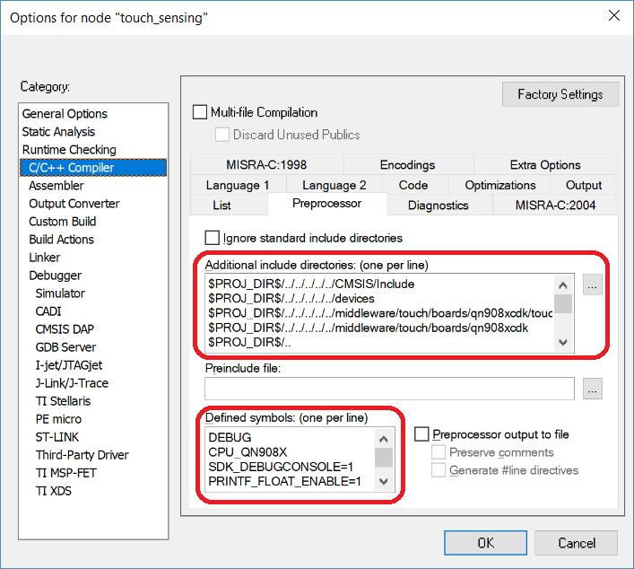
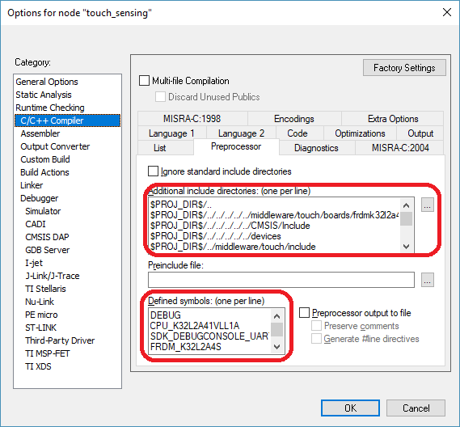
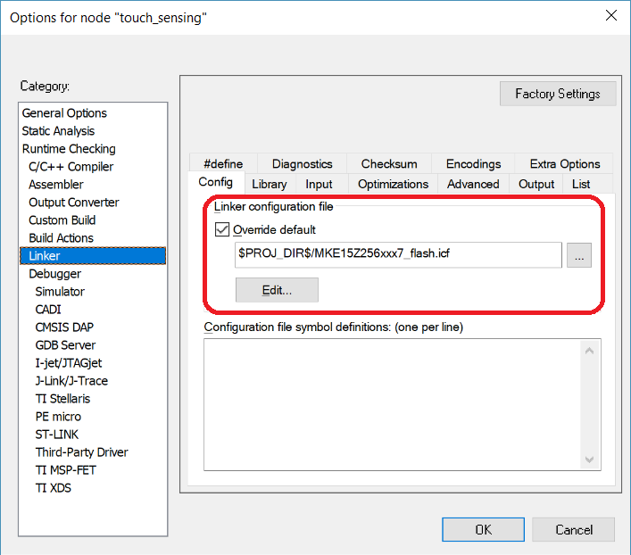
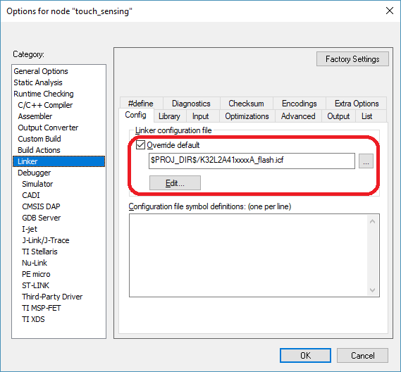
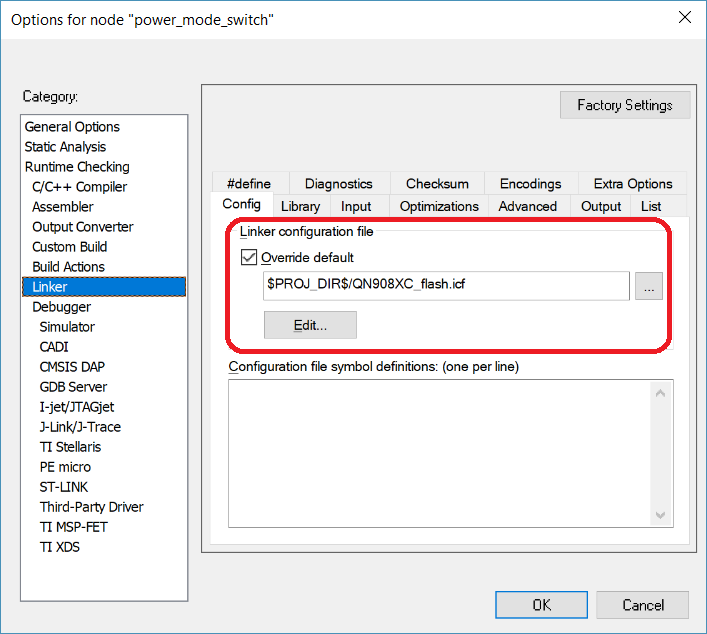

This section describes how to integrate the NXP Touch library into an existing application project. There are several ways of using the NXP Touch library. The simplest way is to use the prepared MCUXpresso SDK-based example projects or the NXP Touch library can be add to your existing application project.
Creating Application with NXP Touch Library
You can use the library in these two ways:
- Put the library source files directly into the application project (as described below).
- Compile the library files into a statically-linked library and use the library in your application project.
This chapter presents the option where all library files are added to the user application project, and compiled together with the application. The other option is to use the prepared MCUXpresso SDK-based projects where all toolchains are supported (see: the MCUXpresso SDK/boards/your_board/demo_apps/touch_sensing). This chapter describes the NXP Touch library integration into the IAR Embedded Workbench IDE only. If you want to use another toolchain, see the Getting Started with MCUXpresso SDK device documentation, where the integration into all toolchains is explained using an example project. The application demonstrated in this section uses keypad consists of two touch electrodes on the FRDM-KE15Z board, four touch electrodes, and the analog slider and analog rotary controls on the FRDM-TOUCH board. The following paragraphs explain how to create such projects.
Adding Library Files into the Project
The library can be easily integrated into your application by adding the NXP Touch source files into your project. See the Directory Structure section to understand the files and folders of the NXP Touch library. There are two steps to take:
- The "include" search paths of your project must be extended to cover the directories with public header files (the /middleware/touch/include folder).
- The source code files must be added into the project (the MCUXpresso SDK/middleware/touch/source folder and all subfolders). Not all source files are always used in the application, but the linker should take care of optimizing the unused code out of the executable.
The library uses the startup code, the linker files, and some low-level driver code from the MCUXpresso SDK or from the existing application project, (if used). This code is not considered to be a part of the NXP Touch library, but it serves as a base for example applications. You can also reuse the MCUXpresso SDK linker files and drivers in your own custom applications. However, it is better to get the latest MCUXpresso SDK version from the NXP website.
The figure below shows a typical NXP Touch application project in the IAR Embedded Workbench IDE:
Setting 'include' Search Paths
The figure shows how to set up the search paths in IAR Embedded Workbench IDE. Only one include path is needed from the NXP Touch point of view. The pre-processor symbols should be defined to identify the CPU and Board for the MCUXpresso SDK low-level code. The valid options can be found in the fsl_device_registers.h file, located in the MCUXpresso SDK/devices/directory.

Include search path for KE15z

Include search path for QN908x

Include search path for K32L2A4S
All search paths: Only the last four paths are currently mandatory for the NXP Touch library, the others are required by MCUXpresso SDK. The path list for the KE15z based board with TSI v5.
PROJ_DIR$/../../../../../CMSIS/Include
$PROJ_DIR$/../../../../../devices
$PROJ_DIR$/..
$PROJ_DIR$/../../../../../devices/MKE15Z7/drivers
$PROJ_DIR$/../../../../../devices/MKE15Z7
$PROJ_DIR$/../../../../../devices/MKE15Z7/utilities/io
$PROJ_DIR$/../../../../../devices/MKE15Z7/utilities/str
$PROJ_DIR$/../../../../../devices/MKE15Z7/utilities/log
$PROJ_DIR$/../../../../../devices/MKE15Z7/utilities
$PROJ_DIR$/../../../../../middleware/touch/boards/frdmke15z
$PROJ_DIR$/../../../../../middleware/touch/freemaster/driver/src_common
$PROJ_DIR$/../../../../../middleware/touch/freemaster/driver/src_platforms/Kxx
$PROJ_DIR$/../../../../../middleware/touch/include
The path list for the QN908x based board with CS module.
PROJ_DIR$/../../../../../CMSIS/Include
$PROJ_DIR$/../../../../../devices
$PROJ_DIR$/..
$PROJ_DIR$/../../../../../devices/QN908XC/drivers
$PROJ_DIR$/../../../../../devices/QN908XC
$PROJ_DIR$/../../../../../devices/QN908XC/utilities/io
$PROJ_DIR$/../../../../../devices/QN908XC/utilities/str
$PROJ_DIR$/../../../../../devices/QN908XC/utilities/log
$PROJ_DIR$/../../../../../devices/QN908XC/utilities
$PROJ_DIR$/../../../../../middleware/touch/boards/qn908xcdk
$PROJ_DIR$/../../../../../middleware/touch/freemaster/driver/src_common
$PROJ_DIR$/../../../../../middleware/touch/freemaster/driver/src_platforms/QN908x
$PROJ_DIR$/../../../../../middleware/touch/include
TThe path list for the K32L2A based board with TSIv 4.
$PROJ_DIR$/..
$PROJ_DIR$/../../../../../middleware/touch/boards/frdmk32l2a4s
$PROJ_DIR$/../../../../../CMSIS/Include
$PROJ_DIR$/../../../../../devices
$PROJ_DIR$/../middleware/touch/include
$PROJ_DIR$/../../../../../devices/K32L2A41A/drivers
$PROJ_DIR$/../../../../../middleware/touch/include
$PROJ_DIR$/../../../../../devices/K32L2A41A
$PROJ_DIR$/../../../../../devices/K32L2A41A/utilities/str
$PROJ_DIR$/../../../../../devices/K32L2A41A/utilities/debug_console
$PROJ_DIR$/../../../../../components/uart
$PROJ_DIR$/../../../../../components/serial_manager
$PROJ_DIR$/../../../../../components/lists
$PROJ_DIR$/../../../../../middleware/freemaster/src/common
$PROJ_DIR$/../../../../../middleware/freemaster/src/drivers/mcuxsdk/serial
$PROJ_DIR$/../../../../../middleware/freemaster/src/drivers/mcuxsdk/can
$PROJ_DIR$/../../../../../middleware/freemaster/src/platforms/gen32le
$PROJ_DIR$/../../../../../devices/K32L2A41A/utilities
Setting the 'linker' path
The figure shows how to set up the linker file in IAR Embedded Workbench IDE. The linker file is reused from the MCUXpresso SDK. You may use your own linker file to have a full control over the linker process.

Linker command file path for KE15z

Linker command file path for QN908x

Linker command file path for K32L2A4S
Application Setup
To define the modules, electrodes, controls, and system, create the initialized instances of the structure types, as described in section Configuring the Library.
The code below shows an example configuration of two electrodes on the FRDM-KE15Z board, further four electrodes, analog rotary, and analog slider controls on the FRDM-TOUCH auxiliary board.
There are several key detectors available in the NXP Touch library. The electrode structure types must always match the module and algorithm types.
This is an example of the uSAFA key detector configuration:
{
.base_avrg = {.n2_order = 12},
.entry_event_cnt = 4,
.signal_to_noise_ratio = 6,
.deadband_cnt = 4,
.min_noise_limit = 100,
};
{
.base_avrg = {.n2_order = 12},
.entry_event_cnt = 4,
.signal_to_noise_ratio = 3,
.deadband_cnt = 4,
.min_noise_limit = 50,
};
{
.base_avrg = {.n2_order = 12},
.entry_event_cnt = 4,
.signal_to_noise_ratio = 3,
.deadband_cnt = 4,
.min_noise_limit = 50,
};
The electrode structure types must match the hardware module used for the data-measurement algorithm in the application. In this case, it is the nt_electrode type. Define the electrode parameters and the nt_keydetector interface.
{
.keydetector_params.usafa = &keydec_usafa,
};
{
.keydetector_params.usafa = &keydec_usafa,
};
{
.
pin_input = NT_TSI_TRANSFORM_MUTUAL(FRDM_TOUCH_BOARD_TSI_MUTUAL_RX_ELECTRODE_1, FRDM_TOUCH_BOARD_TSI_MUTUAL_TX_ELECTRODE_1),
.keydetector_params.usafa = &keydec_usafa_mutual,
};
{
.
pin_input = NT_TSI_TRANSFORM_MUTUAL(FRDM_TOUCH_BOARD_TSI_MUTUAL_RX_ELECTRODE_2, FRDM_TOUCH_BOARD_TSI_MUTUAL_TX_ELECTRODE_2),
.keydetector_params.usafa = &keydec_usafa_mutual,
};
{
.
pin_input = NT_TSI_TRANSFORM_MUTUAL(FRDM_TOUCH_BOARD_TSI_MUTUAL_RX_ELECTRODE_3, FRDM_TOUCH_BOARD_TSI_MUTUAL_TX_ELECTRODE_3),
.keydetector_params.usafa = &keydec_usafa_mutual,
};
{
.
pin_input = NT_TSI_TRANSFORM_MUTUAL(FRDM_TOUCH_BOARD_TSI_MUTUAL_RX_ELECTRODE_4, FRDM_TOUCH_BOARD_TSI_MUTUAL_TX_ELECTRODE_4),
.keydetector_params.usafa = &keydec_usafa_mutual,
};
{
.
pin_input = FRDM_TOUCH_BOARD_TSI_SLIDER_ELECTRODE_1,
.keydetector_params.usafa = &keydec_usafa_slider,
};
{
.
pin_input = FRDM_TOUCH_BOARD_TSI_SLIDER_ELECTRODE_2,
.keydetector_params.usafa = &keydec_usafa_slider,
};
{
.
pin_input = FRDM_TOUCH_BOARD_TSI_ROTARY_ELECTRODE_1,
.keydetector_params.usafa = &keydec_usafa_slider,
};
{
.
pin_input = FRDM_TOUCH_BOARD_TSI_ROTARY_ELECTRODE_2,
.keydetector_params.usafa = &keydec_usafa_slider,
};
{
.
pin_input = FRDM_TOUCH_BOARD_TSI_ROTARY_ELECTRODE_3,
.keydetector_params.usafa = &keydec_usafa_slider,
};
{
.
pin_input = FRDM_TOUCH_BOARD_TSI_ROTARY_ELECTRODE_4,
.keydetector_params.usafa = &keydec_usafa_slider,
};
The Kinetis E family MCUs contain the TSI module version 5. The TSI hardware setup and configuraion for recalibration function are shown below.
const struct nt_electrode *
const module_0_electrodes[] = { \
&electrode_0, &electrode_1, \
&electrode_2, &electrode_3, &electrode_4, &electrode_5, \
&electrode_6, &electrode_7, \
&electrode_8, &electrode_9, &electrode_10, &electrode_11,
NULL};
{
.
configSelfCap.commonConfig.mainClock = kTSI_MainClockSlection_0,
.configSelfCap.commonConfig.mode = kTSI_SensingModeSlection_Self,
.configSelfCap.commonConfig.dvolt = kTSI_DvoltOption_0,
.configSelfCap.commonConfig.cutoff = kTSI_SincCutoffDiv_0,
.configSelfCap.commonConfig.order = kTSI_SincFilterOrder_2,
.configSelfCap.commonConfig.decimation = kTSI_SincDecimationValue_4,
.configSelfCap.commonConfig.chargeNum = kTSI_SscChargeNumValue_7,
.configSelfCap.commonConfig.noChargeNum = kTSI_SscNoChargeNumValue_5,
.configSelfCap.enableSensitivity = true,
.configSelfCap.xdn = kTSI_SensitivityXdnOption_3,
.configSelfCap.ctrim = kTSI_SensitivityCtrimOption_0,
.configSelfCap.inputCurrent = kTSI_CurrentMultipleInputValue_0,
.configSelfCap.chargeCurrent = kTSI_CurrentMultipleChargeValue_0,
.configMutual.commonConfig.mainClock = kTSI_MainClockSlection_0,
.configMutual.commonConfig.mode = kTSI_SensingModeSlection_Mutual,
.configMutual.commonConfig.dvolt = kTSI_DvoltOption_3,
.configMutual.commonConfig.cutoff = kTSI_SincCutoffDiv_0,
.configMutual.commonConfig.order = kTSI_SincFilterOrder_2,
.configMutual.commonConfig.decimation = kTSI_SincDecimationValue_4,
.configMutual.commonConfig.chargeNum = kTSI_SscChargeNumValue_4,
.configMutual.commonConfig.noChargeNum = kTSI_SscNoChargeNumValue_2,
.configMutual.preCurrent = kTSI_MutualPreCurrent_4uA,
.configMutual.preResistor = kTSI_MutualPreResistor_4k,
.configMutual.senseResistor = kTSI_MutualSenseResistor_10k,
.configMutual.boostCurrent = kTSI_MutualSenseBoostCurrent_0uA,
.configMutual.txDriveMode = kTSI_MutualTxDriveModeOption_0,
.configMutual.pmosLeftCurrent = kTSI_MutualPmosCurrentMirrorLeft_32,
.configMutual.pmosRightCurrent = kTSI_MutualPmosCurrentMirrorRight_1,
.configMutual.enableNmosMirror = true,
.configMutual.nmosCurrent = kTSI_MutualNmosCurrentMirror_1,
};
struct nt_tsi_recalib_config recalib_config = {
.SelfRangeMin = 50000,
.SelfRangeMax = 60000,
.SelfRangeDeltaMin= 400,
.SelfRangeDeltaMax= 1300,
.MutRangeMin = 12000,
.MutRangeMax = 16000,
.MutRangeDeltaMin = 300,
.MutRangeDeltaMax = 600,
};
{
.electrodes = &module_0_electrodes[0],
.config = (void*)&hw_config,
.instance = 0,
};
When the modules and electrodes are set up, you may define the Controls. In this case, the control_0 is the Keypad control.
const struct nt_electrode *
const control_0_electrodes[] = { \
&electrode_0, &electrode_1, \
&electrode_2, &electrode_3, &electrode_4, &electrode_5,
NULL};
{
.groups_size = 0,
.multi_touch = (uint32_t[]){0x0C,0x18,0x30,0x24,0x3C},
.multi_touch_size = 5,
};
{
.electrodes = control_0_electrodes,
.control_params.keypad = &keypad_params,
};
The next control is the Analog Slider control with the following setup.
const struct nt_electrode *
const control_1_electrodes[] = { \
&electrode_6, &electrode_7,
NULL};
.insensitivity = 2,
};
{
.electrodes = control_1_electrodes,
.control_params.aslider = &aslider_params,
};
The last control is the Analog Rotary control with the following setup.
const struct nt_electrode *
const control_2_electrodes[] = { \
&electrode_8, &electrode_9, &electrode_10, &electrode_11,
NULL};
};
{
.electrodes = control_2_electrodes,
.control_params.arotary = &arotary_params,
};
Now you can connect all the pieces together in the system structure.
const struct nt_control *
const controls[] = {&keypad_0, &aslider_0, &arotary_0,
NULL};
.modules = &modules[0],
.time_period = 5,
.init_time = 400,
};
The main() Function
The application code is as follows:
#include <stdio.h>
#include <stdlib.h>
#include "fsl_device_registers.h"
#include "fsl_debug_console.h"
#include "fsl_ftm.h"
#include "fsl_lpit.h"
#include "main.h"
#include "board.h"
#include "freemaster.h"
#include "fsl_lpuart.h"
#include "pin_mux.h"
extern void TSI_DRV_IRQHandler(uint32_t instance);
static void pit_init(void);
static void ftm_init(void);
static void init_freemaster_uart(void);
static void keypad_callback(
const struct nt_control *control,
uint32_t index);
static void aslider_callback(
const struct nt_control *control,
uint32_t position);
static void arotary_callback(
const struct nt_control *control,
uint32_t position);
static void system_callback(uint32_t event);
static void SetHueBrightness(uint32_t hue_angle, uint32_t brightness);
uint8_t nt_memory_pool[5000];
uint32_t brightness_global, hue_angle_global;
uint8_t duty_cycle_red, duty_cycle_green, duty_cycle_blue;
const ftm_config_t my_ftm_config = {
.prescale = kFTM_Prescale_Divide_1,
.bdmMode = kFTM_BdmMode_0,
.pwmSyncMode = kFTM_SoftwareTrigger,
.reloadPoints = 0,
.faultMode = kFTM_Fault_Disable,
.faultFilterValue = 0,
.deadTimePrescale = kFTM_Deadtime_Prescale_1,
.deadTimeValue = 0,
.extTriggers = 0,
.chnlInitState = 0,
.chnlPolarity = 0x00,
.useGlobalTimeBase = false,
};
const ftm_chnl_pwm_signal_param_t my_ftm_channel_config[3] = {
{
.chnlNumber = kFTM_Chnl_0,
.level = kFTM_LowTrue,
.dutyCyclePercent = 0U,
.firstEdgeDelayPercent = 0U,
},
{
.chnlNumber = kFTM_Chnl_1,
.level = kFTM_LowTrue,
.dutyCyclePercent = 0U,
.firstEdgeDelayPercent = 0U,
},
{
.chnlNumber = kFTM_Chnl_2,
.level = kFTM_LowTrue,
.dutyCyclePercent = 0U,
.firstEdgeDelayPercent = 0U,
},
};
const lpit_config_t my_pit_config = {
.enableRunInDebug = false,
.enableRunInDoze = false,
};
#ifndef FMSTR_PE_USED
FMSTR_TSA_TABLE_LIST_BEGIN()
FMSTR_TSA_TABLE(nt_frmstr_tsa_table)
FMSTR_TSA_TABLE_LIST_END()
#endif
#define nt_printf(...)
int main(void)
{
int32_t result;
BOARD_InitPins();
BOARD_BootClockRUN();
LED_RED1_INIT(1);
LED_GREEN1_INIT(1);
LED_BLUE_INIT(1);
ftm_init();
init_freemaster_uart();
(void)FMSTR_Init();
if ((result =
nt_init(&system_0, nt_memory_pool,
sizeof(nt_memory_pool))) !=
NT_SUCCESS)
{
switch(result)
{
nt_printf("\nCannot initialize NXP Touch due to a non-specific error.\n");
break;
nt_printf("\nCannot initialize NXP Touch due to a lack of free memory.\n");
printf("\nCannot initialize NXP Touch due to a non-specific error.\n");
break;
}
while(1);
}
nt_printf("\nNXP Touch is successfully initialized.\n");
nt_printf(
"Unused memory: %d bytes, you can make the memory pool smaller without affecting the functionality.\n", (
int)
nt_mem_get_free_size());
if (recalib_enabled)
{
}
if (one_key_only)
pit_init();
while(1)
{
FMSTR_Poll();
}
}
void LPIT0_IRQHandler(void)
{
LPIT_ClearStatusFlags(LPIT0, LPIT_MSR_TIF0_MASK);
}
void TSI_IRQHandler(void)
{
TSI_DRV_IRQHandler(0);
}
static void ftm_init(void)
{
FTM_Init(FTM0, &my_ftm_config);
FTM_SetupPwm(FTM0, my_ftm_channel_config, 3U, kFTM_EdgeAlignedPwm, 10000U, CLOCK_GetFreq(kCLOCK_CoreSysClk));
FTM_StartTimer(FTM0, kFTM_SystemClock);
}
static void pit_init(void)
{
CLOCK_SetIpSrc(kCLOCK_Lpit0, kCLOCK_IpSrcSircAsync);
LPIT_Init(LPIT0, &my_pit_config);
LPIT_SetTimerPeriod(LPIT0, kLPIT_Chnl_0, 5*CLOCK_GetFreq(kCLOCK_ScgSircAsyncDiv2Clk)/1000);
LPIT_EnableInterrupts(LPIT0, LPIT_MIER_TIE0_MASK);
EnableIRQ(LPIT0_IRQn);
LPIT_StartTimer(LPIT0, kLPIT_Chnl_0);
}
static void keypad_callback(
const struct nt_control *control,
uint32_t index)
{
switch(event)
{
switch (index) {
case 0:
break;
case 1:
break;
case 2:
break;
case 3:
break;
case 4:
break;
case 5:
break;
default:
break;
}
break;
switch (index) {
case 0:
hue_angle_global = 12;
brightness_global = 120;
SetHueBrightness(hue_angle_global, brightness_global);
break;
case 1:
hue_angle_global = 36;
brightness_global = 120;
SetHueBrightness(hue_angle_global, brightness_global);
break;
case 2:
hue_angle_global = 0;
brightness_global = 120;
SetHueBrightness(hue_angle_global, brightness_global);
break;
case 3:
hue_angle_global = 24;
brightness_global = 120;
SetHueBrightness(hue_angle_global, brightness_global);
break;
case 4:
hue_angle_global = 48;
brightness_global = 120;
SetHueBrightness(hue_angle_global, brightness_global);
break;
case 5:
hue_angle_global = 73;
brightness_global = 120;
SetHueBrightness(hue_angle_global, brightness_global);
break;
default:
break;
}
break;
switch (index) {
case 0:
break;
case 1:
break;
case 2:
break;
case 3:
break;
case 4:
break;
case 5:
break;
default:
break;
}
break;
default:
break;
}
}
static void aslider_callback(
const struct nt_control *control,
uint32_t position)
{
switch(event)
{
break;
break;
break;
default:
break;
}
brightness_global = position;
SetHueBrightness(hue_angle_global, brightness_global);
}
static void arotary_callback(
const struct nt_control *control,
uint32_t position)
{
switch (event) {
break;
break;
break;
default:
break;
}
hue_angle_global = position;
SetHueBrightness(hue_angle_global, brightness_global);
}
void system_callback(uint32_t event)
{
switch(event)
{
nt_printf("TSI CNTR overflow warning on electrode %d.\n", (int)index);
break;
default:
break;
}
}
static void SetHueBrightness(uint32_t hue_angle, uint32_t brightness)
{
if(hue_angle<=24)
{
duty_cycle_red = 24-hue_angle;
duty_cycle_green = hue_angle;
duty_cycle_blue = 0;
}
if(hue_angle>24 && hue_angle<=48)
{
duty_cycle_red = 0;
duty_cycle_green = 48-hue_angle;
duty_cycle_blue = hue_angle-24;
}
if(hue_angle>48)
{
duty_cycle_red = hue_angle-48;
duty_cycle_green = 0;
duty_cycle_blue = 72-hue_angle;
}
if(hue_angle > 72)
{
duty_cycle_red = 16;
duty_cycle_green = 16;
duty_cycle_blue = 16;
}
brightness = brightness<60 ? 0 : (brightness-60);
FTM0->CONTROLS[kFTM_Chnl_0].CnV = (duty_cycle_blue * (brightness));
FTM0->CONTROLS[kFTM_Chnl_1].CnV = (duty_cycle_green * (brightness));
FTM0->CONTROLS[kFTM_Chnl_2].CnV = (duty_cycle_red * (brightness));
FTM_SetSoftwareTrigger(FTM0, true);
}
static void init_freemaster_uart(void)
{
lpuart_config_t lpuartConfig;
CLOCK_SetIpSrc(kCLOCK_Lpuart1, BOARD_DEBUG_UART_CLKSRC);
uint32_t uartClkSrcFreq = CLOCK_GetIpFreq(kCLOCK_Lpuart1);
LPUART_GetDefaultConfig(&lpuartConfig);
lpuartConfig.baudRate_Bps = BOARD_DEBUG_UART_BAUDRATE;
lpuartConfig.enableTx = true;
lpuartConfig.enableRx = true;
LPUART_Init((LPUART_Type *)BOARD_DEBUG_UART_BASEADDR, &lpuartConfig, uartClkSrcFreq);
EnableIRQ(LPUART1_IRQn);
FMSTR_SetSciBaseAddress((FMSTR_ADDR)(LPUART_Type *)(BOARD_DEBUG_UART_BASEADDR + 0x10));
}
void BOARD_UART_IRQ_HANDLER(void)
{
FMSTR_Isr();
}
 1.8.5
1.8.5